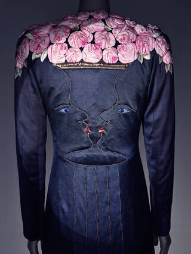

In the Sainsbury Gallery, a dress made of quilted, padded bones stands behind glass. The only surviving Skeleton Dress, designed by Elsa Schiaparelli and Salvador Dalí in 1938. It looks fragile. It looks like it could walk out of the room.
The V&A’s Fashion Becomes Art is the UK’s first major retrospective of the Italian-born designer who made Paris couture strange, funny, and dangerously close to sculpture. Over 400 objects fill the gallery, including 100 fashion ensembles, 50 artworks by Pablo Picasso, Jean Cocteau, Man Ray, and Eileen Agar, and a constellation of accessories, jewellery, perfume bottles, and photographic prints that together reconstruct the world Schiaparelli built between the wars.
The exhibition, co-curated by Sonnet Stanfill, Lydia Caston, and Rosalind McKever, opens with Schiaparelli’s own assertion: for her, dress designing was never a profession. It was an art. The rooms that follow spend seven months proving her right.
Surrealist salon
The first section, Creative Constellations, maps Schiaparelli’s friendships with the surrealists. Dalí’s Lobster Telephone sits beside the 1937 Lobster Dress. An evening coat designed with Cocteau in 1937 carries embroidered profiles in gold thread that form, when mirrored, a vase of pink silk roses. The double image, that old surrealist fascination, rendered in couture stitching.
These collaborations were genuine creative partnerships. Schiaparelli did not commission art for decoration. She invited artists into the process of making clothes, and they accepted because the clothes were already strange enough to deserve their attention. The Tears Dress, designed with Dalí in 1938, arrives here with its original veil intact. Fabric printed to resemble torn flesh. A garment that performs its own destruction.
What strikes you, standing in front of these pieces, is how little they have dated. The Skeleton Dress still shocks. The Cocteau coat still delights. Ninety years on, the provocation holds because it was never gratuitous. It was witty, precise, and rooted in genuine affection between maker and artist.
London ties
A section titled Beyond Paris reveals Schiaparelli’s London connections. She kept a Mayfair salon and dressed a steady stream of British clients, writers, and theatre figures. This transatlantic network, stretching from the Place Vendôme to the West End, is less well known than her Parisian circle. The V&A makes a quiet case that London was always part of the story.
The best fashion exhibitions trust the garments to hold the room. This one does. The clothes carry enough wit, enough nerve, enough sheer invention to make commentary feel redundant.
Isabelle RoweArchival photographs show Schiaparelli in London during the 1930s, a figure moving between the fashion world and the cultural salons of Mayfair and Bloomsbury. Her influence on British fashion, often overshadowed by her Parisian legacy, finds its proper context here. The silk, the embroidery, the irreverence: all of it travelled.

Evening coat designed with Jean Cocteau, 1937. Victoria and Albert Museum
Golden thread
The final room belongs to Daniel Roseberry, Schiaparelli’s creative director since 2019. His sculptural couture pieces occupy the space with the same confidence as the archival garments. Architectural silhouettes. Gold detailing that tips into the absurd. A corseted bubble dress, inspired by the layers of a mille-feuille, revolves under a roving spotlight while celestial music plays.
Roseberry’s work does not imitate Schiaparelli. It continues a conversation she started. The surrealist impulse, the refusal to separate fashion from art, the delight in the uncanny: all of it persists. Ariana Grande’s pale pink Oscar gown from 2025 hangs here, its heel a nod to both Dorothy’s ruby slippers and Schiaparelli’s original Shoe Hat collaboration with Dalí. Past and present share the same wall.
The exhibition runs through 8 November 2026 in the Sainsbury Gallery. Tickets start at £28. For anyone with even a passing interest in where fashion and art meet, give way, and become the same thing, it is essential.